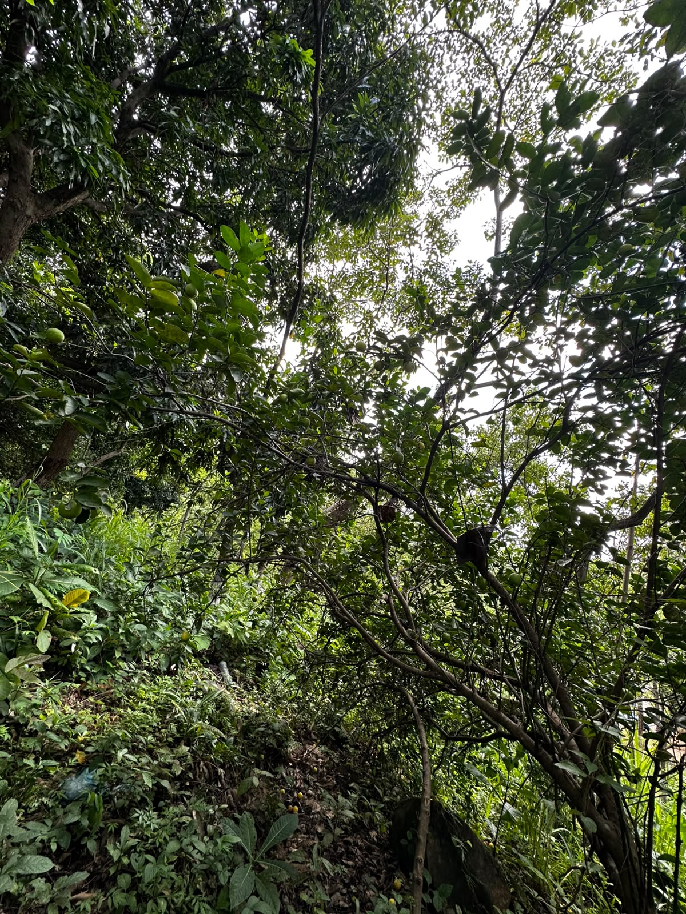
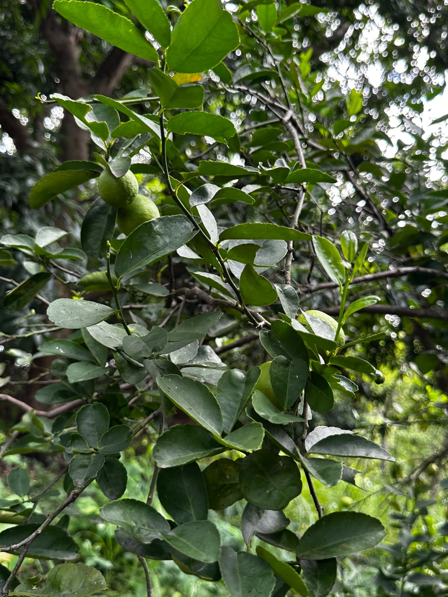
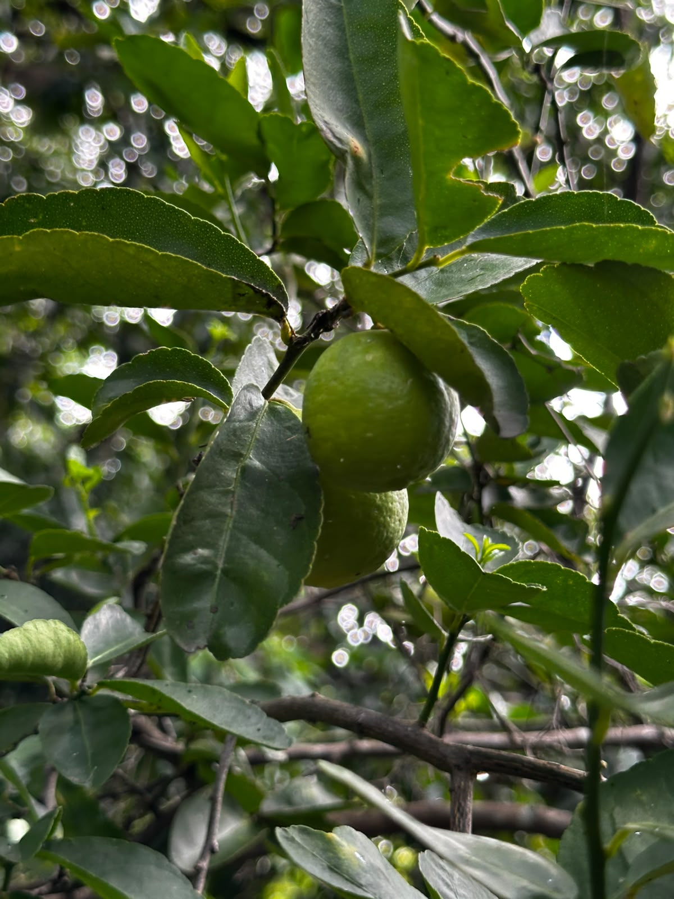

Limon
 Galería del Limon
Galería del Limon
📸 Galería del Limon



Nombre científico
Citrus x limon.
Familia
Rutaceae
Descripción
es un árbol frutal de tamaño pequeño a mediano que crece en climas cálidos y tropicales. Tiene un tronco ramificado, ramas que pueden presentar espinas y una copa con abundante follaje. Sus hojas son simples, de forma ovalada o elíptica, con bordes ligeramente dentados, color verde y textura lisa. Al frotarlas desprenden un aroma cítrico característico. Sus frutos son redondos u ovalados, de cáscara verde y pulpa jugosa con sabor ácido
Usos
se utiliza principalmente en la gastronomía para preparar bebidas, El limón es principalmente comestible y se utiliza para preparar aguas frescas, jugos, salsas, aderezos y diversos alimentos. También se emplea para condimentar comidas y conservar algunos productos. En la medicina tradicional se usa en remedios caseros para aliviar molestias leves, aunque no sustituye los tratamientos médicos. Además, su cáscara contiene aceites aromáticos que se aprovechan en productos de limpieza y perfumería.
📍 Lugar donde fue encontrada
Municipio de Huehuetan, Chiapas.